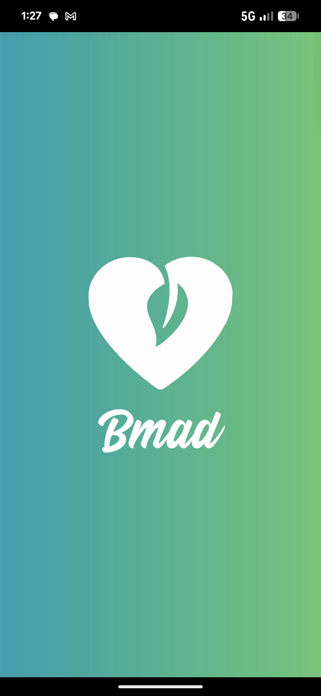
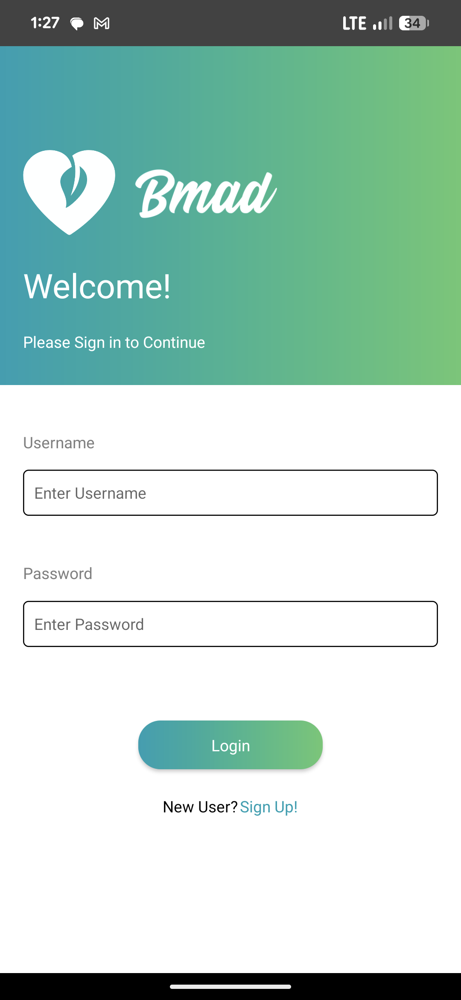

BMAD



BMAD stands for Buy Me a Drink! It was a mobile application that I worked on for a client during my time at Colossus Media group. It was designed as a location based dating app, where you could send nearby users a virtual drink, an invite to meet and chat. Users had a limited amount of drinks they could send to other users before having to purchase microtransactions, or wait for them to regenerate. I was partially responsbile for the development of the node.js backend, as well as a portion of the front end and UI elements using React.
We chose React after our previous project, MovWays, as it allowed us to develop packages simultaneously for Android and iPhone, using a single codebase. This was much easier, and much more manageable! It also garaunteed feature parity between both platforms!
